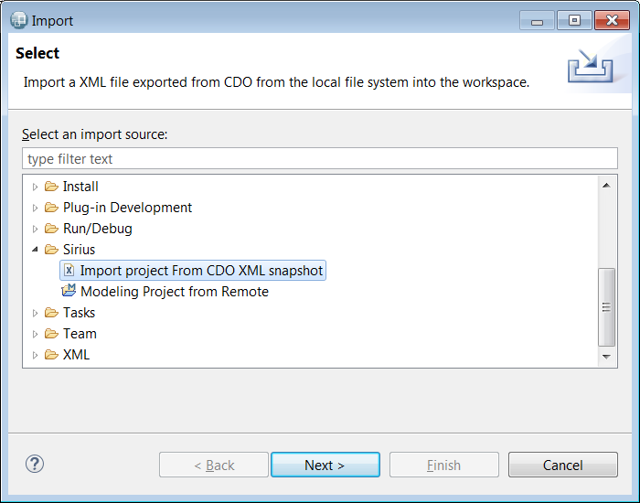
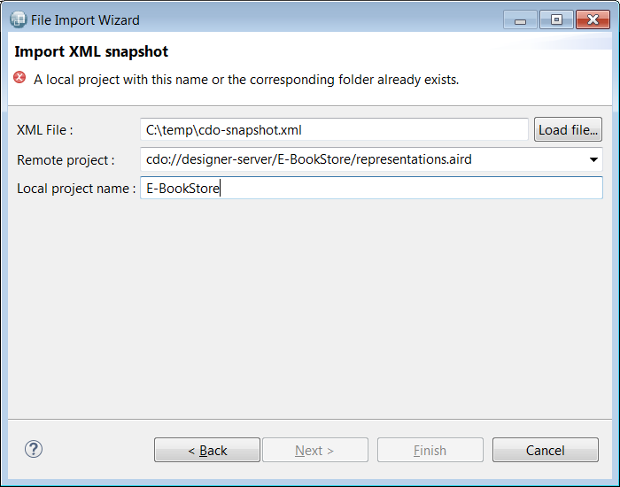

Copyright © Obeo 2016, 2017 - All rights reserved. This program and the accompanying materials are made available under the terms of the Eclipse Public License v1.0
Authors Stéphane Thibaudeau
Contact stephane.thibaudeau@obeo.fr
A CDO server, as the one provided by Obeo Designer Team, allows one to export the contents of a repository in XML format.
A CDO XML Snapshot is not easily read. One must create a new CDO server, load the file using the cdo export command. And finally locally import a project into the workspace from Obeo Designer Team.
The CDO XML Snapshot Importer can be used to do all these steps for you. You select an XML file, a project to import and the importer automatically creates the local project for you. An embedded CDO server is created and destroyed in the backstage to do this.
To use the importer you first need a CDO XML snapchot. To create such a snapshot, just type the following command in the CDO server console, replacing <repository-name> and <filename> with respectively the name of the repository you want to export and the path to the XML file you want to create :
cdo export <repository-name> <filename>
The importer can be launched using the import menu :
File... > Import... > Sirius > Import project from CDO XML snapshot

In the wizard, use Load file... to select a XML snapshot file. It is then automatically loaded in a freshly created embedded CDO server.
The remote projects list is automatically filled with the contents of the repository and the first project is selected.
A local project name is suggested given the remote project name. If a project with this name already exists in workspace an error message is displayed and the wizard can not be completed until a valid local project name has been given.

Once the wizard is completed a modeling project is created in the workspace.